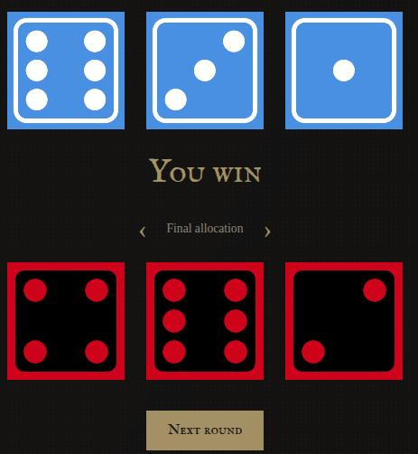

Roles y presupuesto
El Atacante reparte hasta 11 puntos en tres dados. El Defensor reparte hasta 10 puntos y gana los empates de sección.
El Atacante reparte hasta 11 puntos en tres dados. El Defensor reparte hasta 10 puntos y gana los empates de sección.
Los dados se enfrentan en espejo de vanguardia a retaguardia. Se necesitan al menos dos secciones para ganar la ronda.

El jugador que ganó la ronda anterior debe jugar una disposición de dados donde haya al menos dos dados con el mismo valor, mientras tanto el jugador que perdió la ronda debe jugar una disposición donde cada dado tiene un valor diferente.